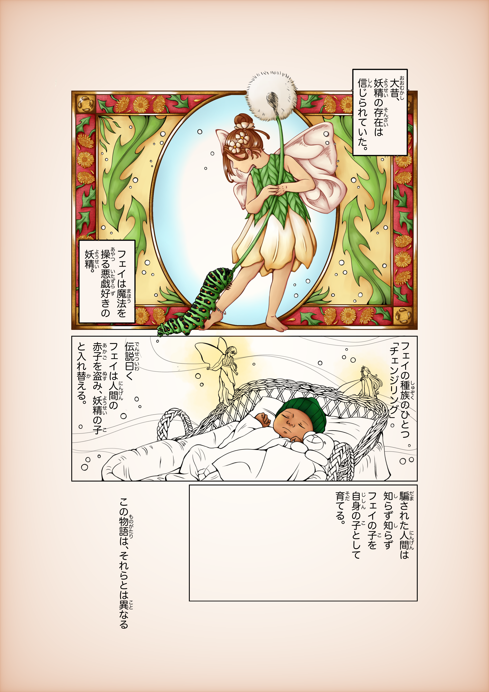
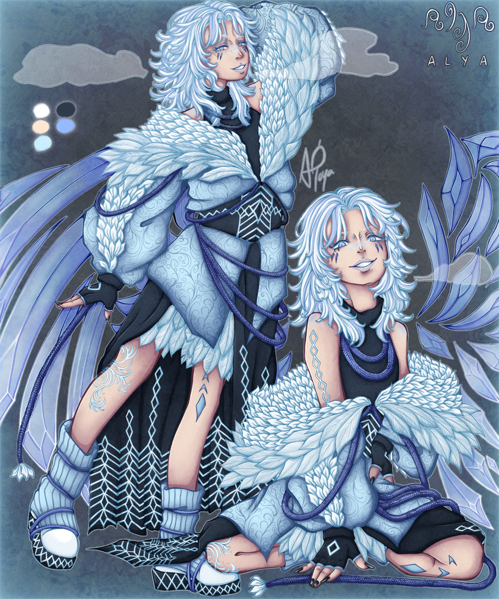
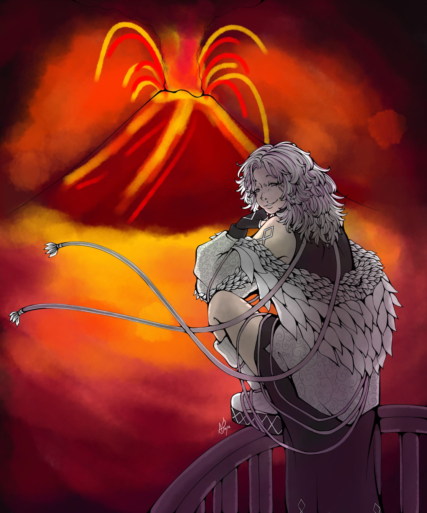
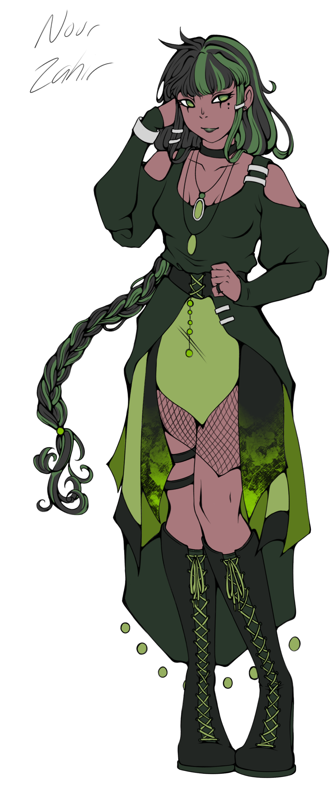
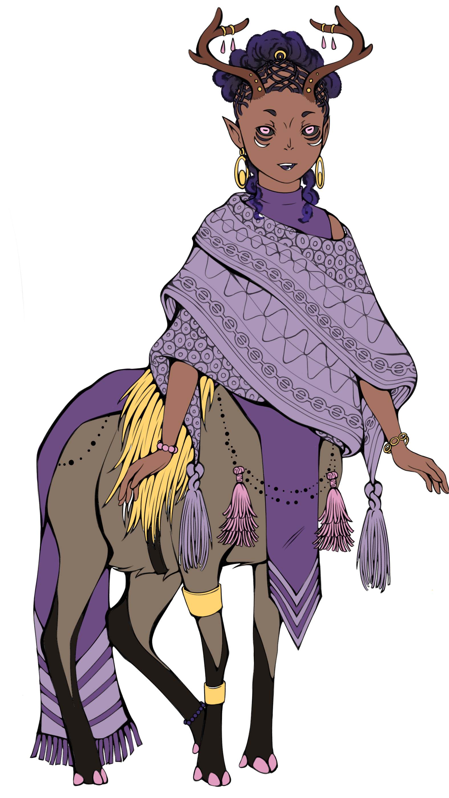

☂︎Changelings

Changlings is a comic that I'm currently in the process of scripting and drawing out. It tells the story of immortal fae creatures (changelings) that run a gay bar in Brooklyn.

I intend to post this comic a few pages at a time online, rather than through an official publisher, like I intend to do with some of my other works. While I do have series ideas and messaging that I plan on including in the story, t's very much a 'just for fun' project.



Despite having the most complex character design of all the protagonists within this story, he is my favorite, so I end up drawing him the most. The third iamge was made in collaboration with Kewpi.


I do have some other character refs that I'm currently working on, though. These are characters that are introduced later as the story progresses. They are a human and cervitaur, respectively.